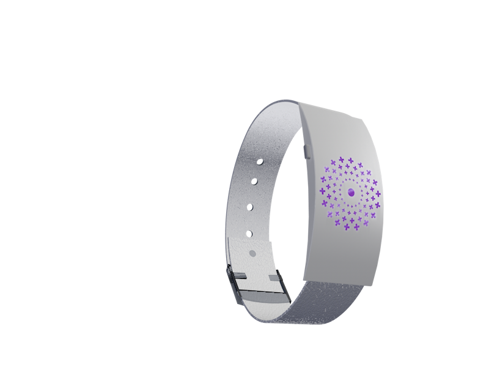

X% da população hoje é idosa, dessa parcela X% sofre de Alzheimer
Sabe-se que em XX a população de idosos será de XX isso significa um aumento de X em casos de mal de Alzheimer.
A doença caracteriza-se pela perda de memória recente e vai desgastando as memórias de longo prazo aos poucos. É como se XX GB de memória de sua vida toda fosse simplesmente apagado.
Por isso o papel do cuidador é essencial, ele que irá auxiliar nas atividades que o portador de Alzheimer não consegue mais exercer, além de fornecer todo carinho necessário nessa fase tão difícil.
95% dos entrevistados aceitaria a ajuda de um dispositivo tecnológico que ajudasse no cuidado dos portadores de Alzheimer
A pulseira SAVE conta com 5 funções complementares para auxiliar no cuidado dos portadores do mal de Alzheimer.
Histórico médico e dados pessoais – Em caso de emergência ou de controle sobre o quadro do paciente, a pulseira armazenara um código único que dará acesso aos dados emergenciais, como telefones de contato, remédios ministrados, tipo sanguíneo, doenças crônicas etc.
Geolocalização – visando amenizar o tempo de procura em caso de desaparecimento, a pulseira conta com um dispositivo GPS que informa suas coordenadas geográficas.
Controle de quedas – como dispositivo de segurança a pulseira consegue avisar quando o paciente sofreu uma queda, enviando um alerta para o dispositivo conectado a ela.
Botão de emergência – ao ser pressionado por alguns segundos é enviada uma notificação ao celular cadastrado.
A pulseira pode ser utilizada diariamente, possui bateria recarregável, foi projetada com material impermeável e leve.
Pode ser ajustada ao pulso facilmente.
Contem símbolo de (emergência?) podendo ser facilmente identificada.
É plug and play, o que facilita o uso para todos os seus usuários.